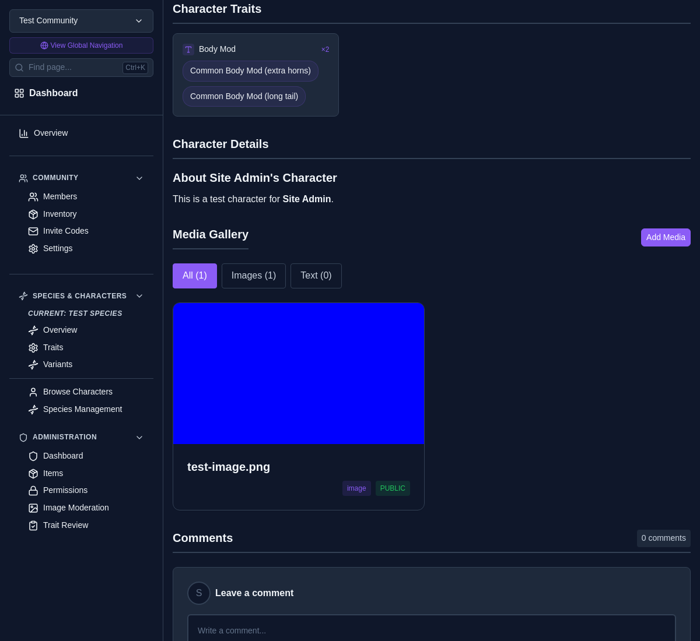

A walkthrough of free-text clarifiers on character trait values
Clarifiers let you attach an optional free-text note to any character trait value. The clarifier is rendered in parentheses after the value, so a single trait can describe many distinct things without exploding the trait list.
For example, instead of creating a separate trait for every body modification, you can use one multi-value Body Mod trait and clarify each instance:
Species managers opt in each trait individually
Each value carries its own clarifier
Trait review surfaces clarifier changes
Works on Text, Number, Date, and Selection traits
Open the species' Trait Builder, then either create a new trait or edit an existing one. Toggle Allow clarifier text on. The setting lives on the trait itself, so it applies to every variant that uses the trait.
When editing a character, traits with clarifiers enabled show a second text input labelled Clarifier (optional) next to the value input.
Value (clarifier). Repeat to add more, including
duplicates of the same value with different clarifiers.
On the character profile, clarified values are rendered with the clarifier in parentheses immediately after the value. Multi-value traits show each instance as its own chip; single-value traits show the value inline.

The
Trait Review Queue
treats the
(value, clarifier) pair as the diff key. Changing
only the clarifier — same value, different note — registers as a
change, just like swapping the value itself.